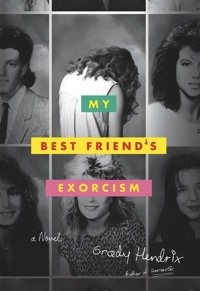
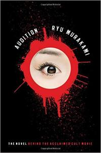
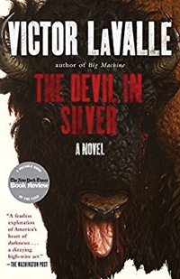

...My Best Friend's Exorcism
Abby and Gretchen have been best friends since fifth grade, when they bonded over a shared love of E.T., roller-skating parties, and scratch-and-sniff stickers. But when they arrive at high school, things change. Gretchen begins to act….different. And as the strange coincidences and bizarre behavior start to pile up, Abby realizes there’s only one possible explanation: Gretchen, her favorite person in the world, has a demon living inside her. And Abby is not about to let anyone or anything come between her and her best friend. With help from some unlikely allies, Abby embarks on a quest to save Gretchen. But is their friendship powerful enough to beat the devil?

...A Head Full of Ghosts
The lives of the Barretts, a normal suburban New England family, are torn apart when fourteen-year-old Marjorie begins to display signs of acute schizophrenia. To her parents' despair, the doctors are unable to stop Marjorie's descent into madness. As their stable home devolves into a house of horrors, they reluctantly turn to a local Catholic priest for help. Father Wanderly suggests an exorcism; he believes the vulnerable teenager is the victim of demonic possession. He also contacts a production company that is eager to document the Barretts' plight. With John, Marjorie's father, out of work for more than a year and the medical bills looming, the family agrees to be filmed, and soon find themselves the unwitting stars of The Possession, a hit reality television show. When events in the Barrett household explode in tragedy, the show and the shocking incidents it captures become the stuff of urban legend. Fifteen years later, a bestselling writer interviews Marjorie's younger sister, Merry. As she recalls those long ago events that took place when she was just eight years old, long-buried secrets and painful memories that clash with what was broadcast on television begin to surface--and a mind-bending tale of psychological horror is unleashed, raising vexing questions about memory and reality, science and religion, and the very nature of evil.

...the Damnation game
There are things worse than death. There are games so seductively evil, so wondrously vile, no gambler can resist. Amid the shadow-scarred rubble of World War II, Joseph Whitehead dared to challenge the dark champion of life’s ultimate game. Now a millionaire, locked in a terror-shrouded fortress of his own design, Joseph Whitehead has hell to pay. And no soul is safe from this ravaging fear, the resurrected fury, the unspeakable desire of The Damnation Game

...Audition
Documentary-maker Aoyama hasn't dated anyone in the seven years since the death of his beloved wife, Ryoko. Now even his teenage son Shige has suggested he think about remarrying. So when his best friend Yoshikawa comes up with a plan to hold fake film auditions so that Aoyama can choose a new bride, he decides to go along with the idea

...the devil in silver
Pepper is a rambunctious big man, minor-league troublemaker, working-class hero (in his own mind), and, suddenly, the surprised inmate of a budget-strapped mental institution in Queens, New York. He’s not mentally ill, but that doesn’t seem to matter. He is accused of a crime he can’t quite square with his memory. In the darkness of his room on his first night, he’s visited by a terrifying creature with the body of an old man and the head of a bison who nearly kills him before being hustled away by the hospital staff. It’s no delusion: The other patients confirm that a hungry devil roams the hallways when the sun goes down. Pepper rallies three other inmates in a plot to fight back: Dorry, an octogenarian schizophrenic who’s been on the ward for decades and knows all its secrets; Coffee, an African immigrant with severe OCD, who tries desperately to send alarms to the outside world; and Loochie, a bipolar teenage girl who acts as the group’s enforcer. Battling the pill-pushing staff, one another, and their own minds, they try to kill the monster that’s stalking them. But can the Devil die? The Devil in Silver brilliantly brings together the compelling themes that spark all of Victor LaValle’s radiant fiction: faith, race, class, madness, and our relationship with the unseen and the uncanny. More than that, it’s a thrillingly suspenseful work of literary horror about friendship, love, and the courage to slay our own demons